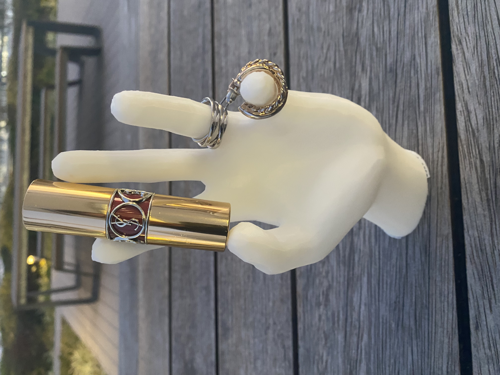
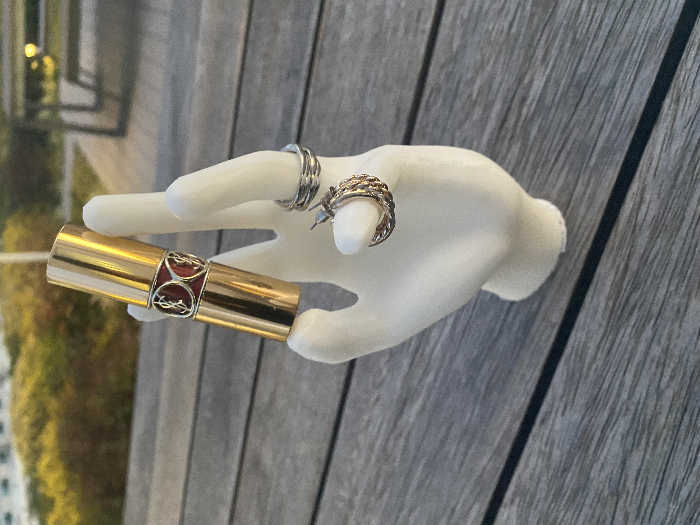
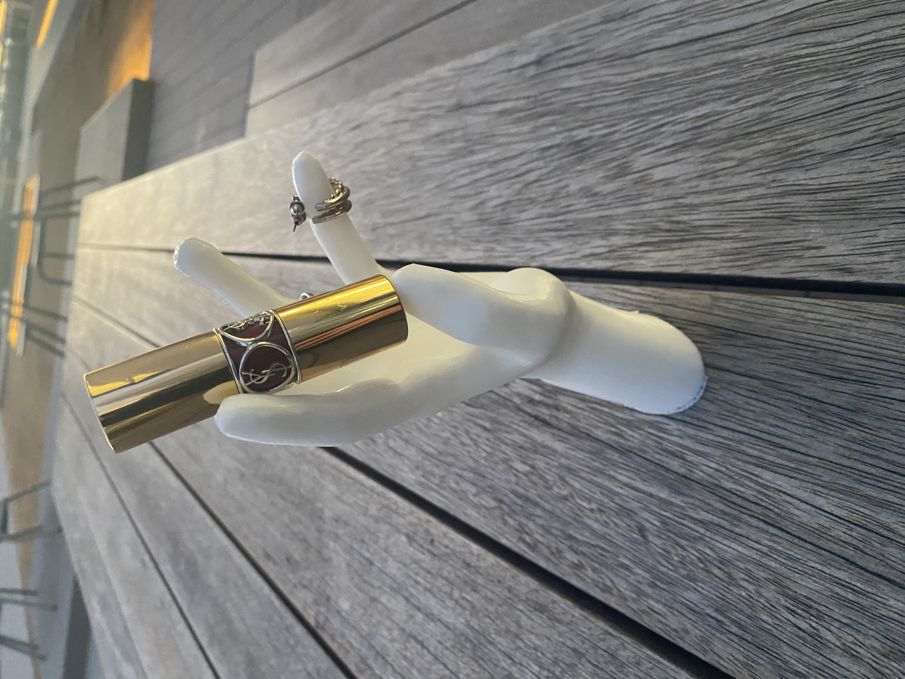
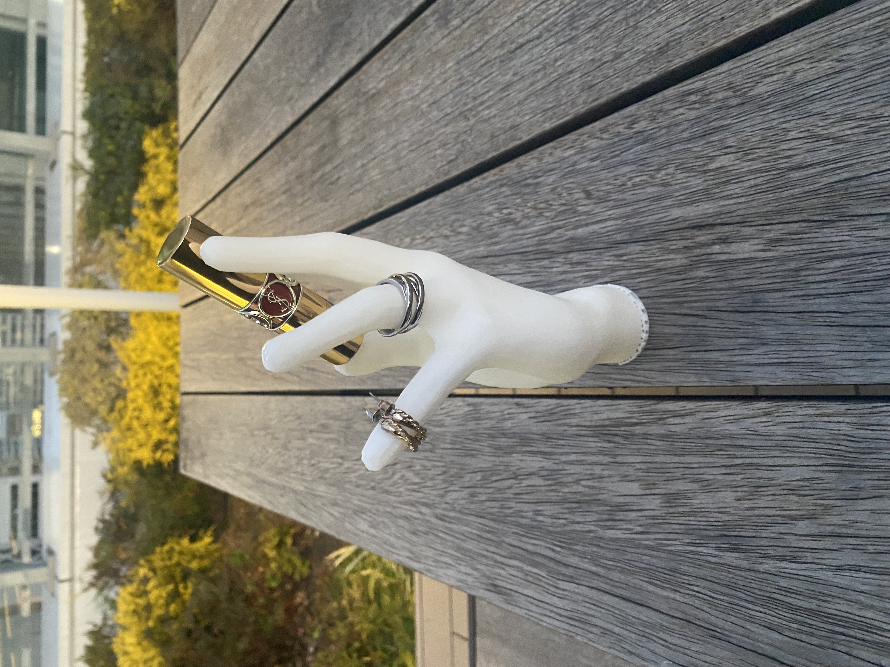
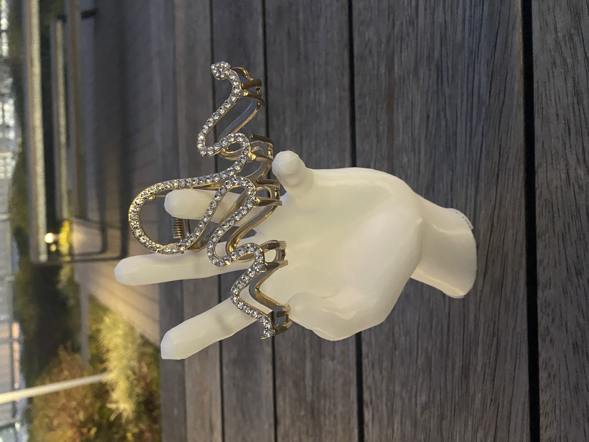

アクセサリースタンド
最終課題の作品として制作したのはアクセサリースタンド。大量にあるアクセサリーの収納に役立つと思いこの作品を作った。
作品の画像
どの角度から見てもおしゃれな雰囲気でかわいい。
   
作品の動画
※スマホからパソコンに動画を送る際にファイルのサイズを小さくする必要があったため、解像度を下げている。
作品のポイント
-
形が独特であること
ただアクセサリーを収納できるものではつまらないので、見た目でも楽しめるようなインパクトやデザイン性のあるものにしたいと思った。
-
様々なものがかけられること
指の角度などを自然な状態より少し変えた。リングやピアスのようなアクセサリーだけでなく、リップやヘアクリップなどもかけられる。

作り方
3Dスキャンで手の型をとり、3Dプリンターで作成。
手の中の繊維の密度を荒くすることで、プリントの時間の削減を試みた。
一緒に作成したメンバー
一緒に作成したメンバーのサイトのリンクは以下の通り
9lim muku
※3人で手の型をとったりとられたりしたが、データ化する際にうまくできたのが1つだったため、縮小度を変えたりして作成した。
反省
手という、自分たちの体の一部を作品化したのが今回の制作で最も面白味を感じらる部分だった。
ファブラボの先生方にたくさん支えていただいた。改めて、今回の制作にご協力いただきましてありがとうございました。